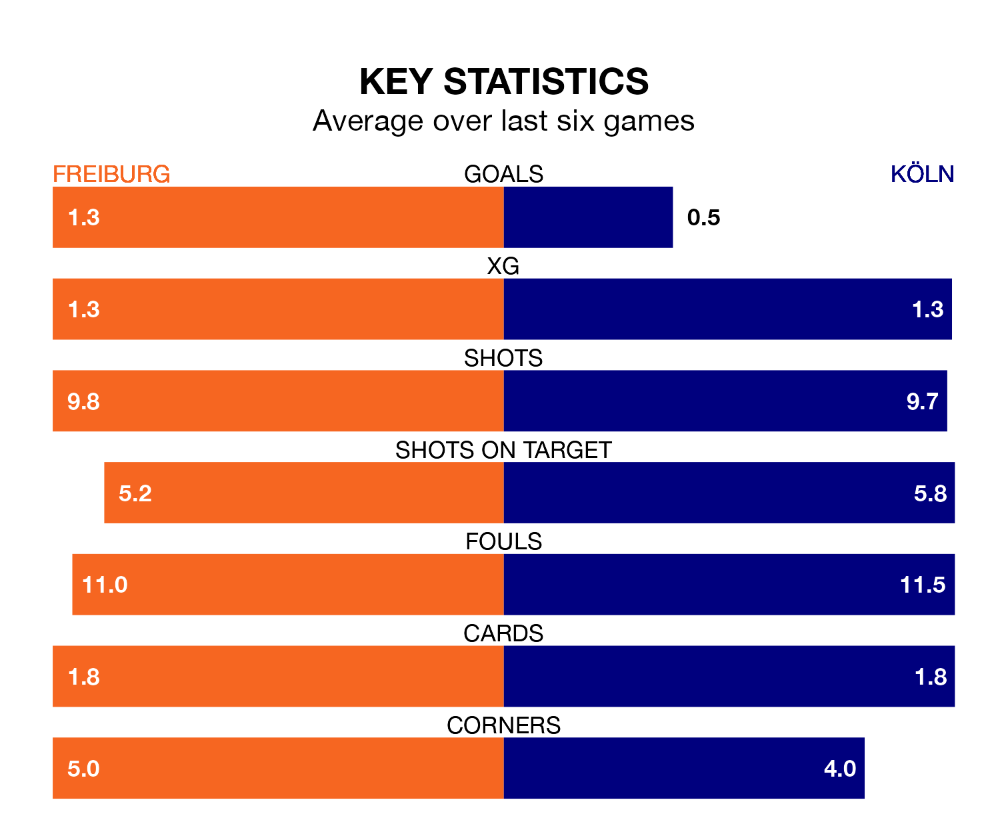

Köln travel to Freiburg on early Sunday in the Bundesliga.
The visitors come into the game on the back of a draw in their last match, having tied with Mainz 05 0-0 at home.
Freiburg, meanwhile, won their last match, 1-0 against Wolfsburg, with their goal scored by Michael Gregoritsch.
With Noah Atubolu between the sticks, Freiburg can rely on one of the league's safest pair of hands. He has kept five clean sheets in his 14 appearances this season, and no 'keeper has prevented the opposition scoring more often in the Bundesliga.
In Köln's net, Marvin Schwäbe has two clean sheets in 14 games. He has conceded a goal every 55 minutes, only slightly more often than the 57 minutes between goals for Atubolu.
The away side are 16th in the table after 14 games, of which they have won two and drawn four, earning 10 points.
The hosts are eight places ahead of Köln in eighth, with six wins and three draws putting them on 21 points.
In the last 10 years, Freiburg and Köln have played each other on 15 occasions. Freiburg won 10 of them, Köln four, and they drew once.
On average, Freiburg scored 1.8 goals and Köln 1.3 in those matches.
Their last meeting was on April 29, when Freiburg won 1-0 away.
Freiburg are in mixed form in the Bundesliga, with two wins and two draws from their last six games.
With a win and three draws over that period, Köln's form is slightly worse – they have taken six points from 18, compared to Freiburg's eight.
With 10 goals in 14 games so far this season, the visitors are the league's lowest scorers with 0.7 goals per game. And they are conceding at an average rate, letting in 24 goals at a rate of 1.7 per game.
The home team are also below average scorers, with 1.2 goals per game, compared to a league average of 1.7. They have conceded 1.6 goals per game.
